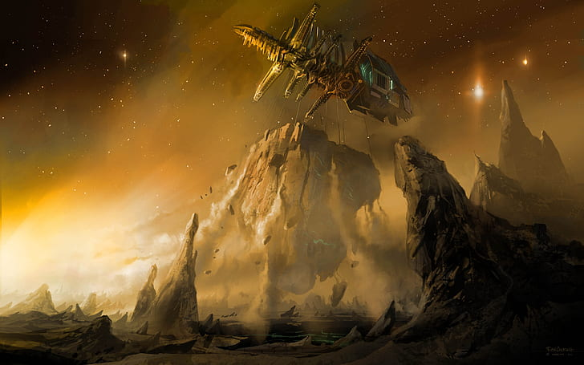
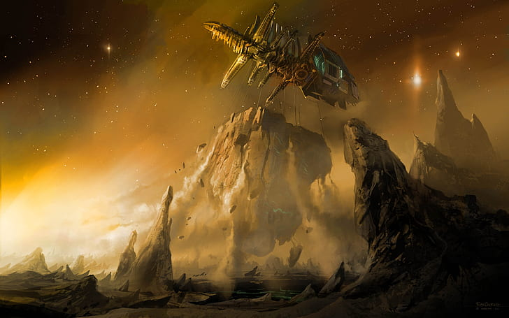
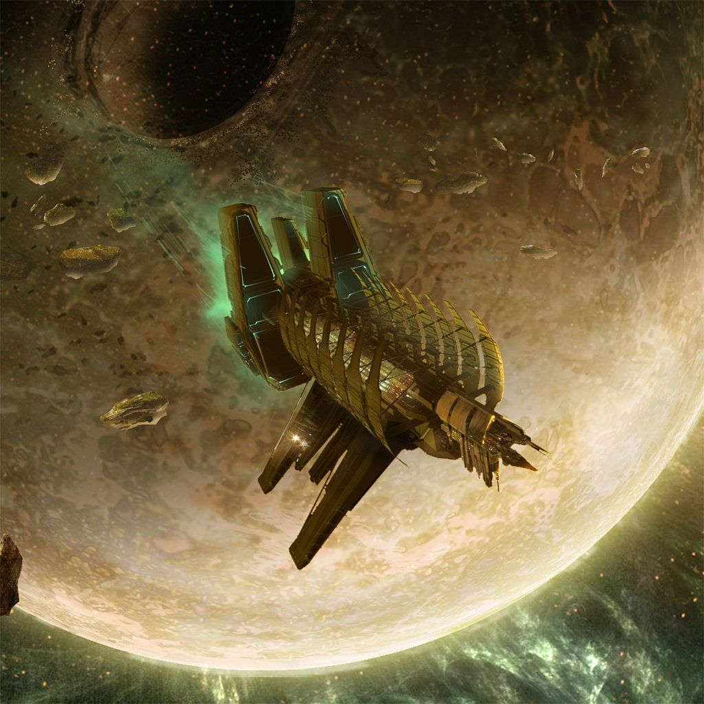

Built in 2246, the Ishimura was hailed as the savior of Earth and the colonies and a symbol of mankind's innovation. She was created to mine and process asteroids and even small moons with remarkable efficiency. She was also the first ship capable of the pioneering "scan and catch" technique for harvesting mineral-rich asteroids. Utilizing huge gravity tethers, the Ishimura could lock onto asteroids and pull them inside the ship's massive collection bays for quick and efficient smelting.
62 years after it was first launched, the Ishimura is still in remarkable shape. Her equipment has been upgraded over the years, and many of her interior spaces have been retrofitted to take advantage of current technological advances. Despite so many long years of service, she remains the pride of the Nexs fleet and is still the company's largest planet cracker. Whenever a vital deep space mining project that require's skill and experience, the Ishimura is the first ship to be called. Without the resources gathered by the Ishimura, Earth and its colonies would still be embroiled in the Resource Wars.